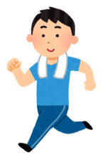
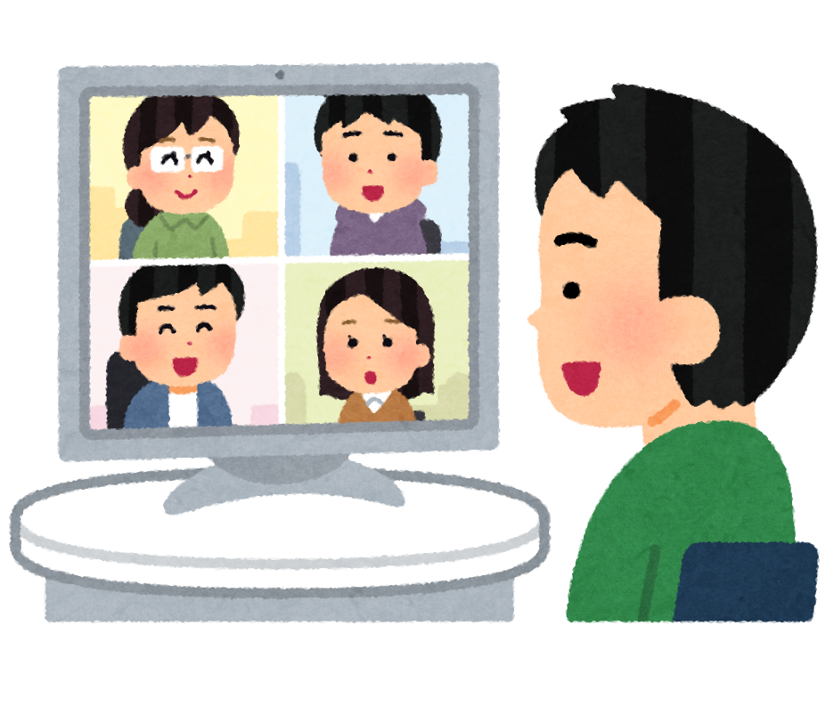
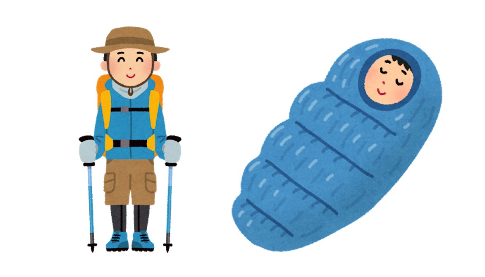

新歓情報
入部の流れ
入部届はオンラインで受け付けています。公式LINEでご連絡ください！
例年は、実際に登山用品に行き装備について説明する装備ツアーを行っていますが、今年はその内容をオンラインで行おうと考えています。日時等は別途SNSにてご連絡します！
今年度の入部は締め切りました！
普段の活動
上智大学のワンダーフォーゲル部は毎月1度程度のペースで登山を行っています。個人差はあるものの夏季休暇では北アルプスなど長期縦走に出向いています。
目標を設定しその達成に向け、体力トレーニングや技術講習を行います。
現在の基本活動として、週に一回のトレーニングがあります。1時間弱で大学近くにある迎賓館の周りのジョギングを軽い筋トレを行っています。
毎週水曜日の昼休みに部会も行っています。部会では活動の事前ミーティング、事後反省、連絡事項の共有をしています。
その他机上講習や地図読み講習など様々な講習もあり参加必須となっています。
春の活動(5~7月)
部員全員が夏の長期縦走を安全に行えるようになることを目標に、1泊2日程度の強化プレ山行、強化山行でレベルアップを図っていきます。
入部してすぐに、机上講習や地図読み講習を行い、基本的な登山技術、知識を学ぶので、登山初心者でも大丈夫です！
山行では寝食を共にするので、1回1回の企画の密度が濃く、同期や先輩と仲良くなれること間違いなしです！
夏の活動(8~9月)

2か月ある夏休みの間では、授業期間中には行けないような長期合宿を行います。
2泊3日山行から5泊6日にもなる大縦走、部員の親交を深めるキャンプなど多方面での活動を行います。
夏は山登りのベストシーズンなので、特に大縦走は思い出に残ります！
秋の活動(10~11月)
紅葉がとてもきれいなこの時期は、夏で得た体力を落とさないためにも、春同様筑波山や八ヶ岳など山に登ります。中には日帰り山行やナイトハイクもあります。
より高度な登山技術の習得のための実地講習、地図読み講習も行います。
山に登れない時期は部員の親睦を深めるキャンプなどアウトドア活動もしています。
秋の活動(12~3月)

山は積雪が早く、積雪時は専用の道具がないと登れません。また、無雪期と比べ危険も高まるので希望者のみ雪山登山をしています。（もちろん、コーチに指導いただいたり安全には十分配慮しています。）
登山以外の活動として、スキー合宿に行ったり春休みには離島遠征も行ったりしています。
その他活動
雪山研究会・沢登り研究会
希望者が集まり、OBなどの指導の下で活動しています。研究会で勉強会も定期的に行なっています。
個人山行
個々人のレベルアップの機会づくりとして、部活の公式山行以外でも「個人山行」という形で登山活動をする人もいます。
費用について

入会金 2000円：山岳保険代。入部時のみ。
体育会費 2000円/半期
部費 1000円/月。3ヵ月に1回まとめて徴収しています。高価な共同装備を買っています。
山行 各山行によって変わりますが、 交通費（3000~6000円）、テント場代（～1000円）、食費（～500円）などがかかります。
⇒およそ1万円程度
必須装備
登山用の道具はどれも高価で、登山に必要なものをそろえるだけで合計１０万円ほどかかってしまいます。工夫すれば、費用は抑えられます！
一方で登山の道具は性能もよく長持ちするのでコストパフォーマンスは悪くないと思います。一生楽しめる趣味になると考えれば投資の価値は十分ではないでしょうか？
基本装備
登山靴、レインウェア、ザック、シュラフ、 ヘッドライト、エマージェンシーシート、 コンパス、スリング、カラビナ、シュラフ用マット その他：登山用靴下、帽子、登山ウェア
色々多くのものがありますが、随時装備ツアーと言うワンゲル部員が一緒に登山用品店に行き、説明して回るものも行っています。
おすすめ情報や雰囲気を知ることができ、初心者の方でも安心です。
入部の流れ
入部届はオンラインで受け付けています。公式LINEでご連絡ください！
例年は、実際に登山用品に行き装備について説明する装備ツアーを行っていますが、今年はその内容をオンラインで行おうと考えています。日時等は別途SNSにてご連絡します！
今年度の入部は締め切りました！